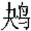
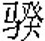

衍太太现在是早经做了祖母，也许竟做了曾祖母了；那时却还年青，只有一个儿子比我大三四岁。她对自己的儿子虽然狠，对别家的孩子却好的，无论闹出什么乱子来，也决不去告诉各人的父母，因此我们就最愿意在她家里或她家的四近玩。
举一个例说罢，冬天，水缸里结了薄冰的时候，我们大清早起一看见，便吃冰。有一回给沈四太太[157]看到了，大声说道：“莫吃呀，要肚子疼的呢！”这声音又给我母亲听到了，跑出来我们都挨了一顿骂，并且有大半天不准玩。我们推论祸首，认定是沈四太太，于是提起她就不用尊称了，给她另外起了一个绰号，叫作“肚子疼”。
衍太太却决不如此。假如她看见我们吃冰，一定和蔼地笑着说，“好，再吃一块。我记着，看谁吃的多。”
但我对于她也有不满足的地方。一回是很早的时候了，我还很小，偶然走进她家去，她正在和她的男人看书。我走近去，她便将书塞在我的眼前道，“你看，你知道这是什么？”我看那书上画着房屋，有两个人光着身子仿佛在打架，但又不很像。正迟疑间，他们便大笑起来了。这使我很不高兴，似乎受了一个极大的侮辱，不到那里去大约有十多天。一回是我已经十多岁了，和几个孩子比赛打旋子，看谁旋得多。她就从旁计着数，说道，“好，八十二个了！再旋一个，八十三！好，八十四……”但正在旋着的阿祥，忽然跌倒了，阿祥的婶母也恰恰走进来。她便接着说道，“你看，不是跌了么？不听我的话。我叫你不要旋，不要旋……。”
虽然如此，孩子们总还喜欢到她那里去。假如头上碰得肿了一大块的时候，去寻母亲去罢，好的是骂一通，再给擦一点药；坏的是没有药擦，还添几个栗凿和一通骂。衍太太却决不埋怨，立刻给你用烧酒调了水粉，搽在疙瘩上，说这不但止痛，将来还没有瘢痕。
父亲故去之后，我也还常到她家里去，不过已不是和孩子们玩耍了，却是和衍太太或她的男人谈闲天。我其时觉得很有许多东西要买，看的和吃的，只是没有钱。有一天谈到这里，她便说道，“母亲的钱，你拿来用就是了，还不就是你的么？”我说母亲没有钱，她就说可以拿首饰去变卖；我说没有首饰，她却道，“也许你没有留心。到大厨的抽屉里，角角落落去寻去，总可以寻出一点珠子这类东西……。”
这些话我听去似乎很异样，便又不到她那里去了，但有时又真想去打开大厨，细细地寻一寻。大约此后不到一月，就听到一种流言，说我已经偷了家里的东西去变卖了，这实在使我觉得有如掉在冷水里。流言的来源，我是明白的，倘是现在，只要有地方发表，我总要骂出流言家的狐狸尾巴来，但那时太年青，一遇流言，便连自己也仿佛觉得真是犯了罪，怕遇见人们的眼睛，怕受到母亲的爱抚。
好。那么，走罢！
但是，那里去呢？S城人的脸早经看熟，如此而已，连心肝也似乎有些了然。总得寻别一类人们去，去寻为S城人所诟病的人们，无论其为畜生或魔鬼。那时为全城所笑骂的是一个开得不久的学校，叫作中西学堂[158]，汉文之外，又教些洋文和算学。然而已经成为众矢之的了；熟读圣贤书的秀才们，还集了“四书”[159]的句子，做一篇八股[160]来嘲诮它，这名文便即传遍了全城，人人当作有趣的话柄。我只记得那“起讲”的开头是：
“徐子以告夷子曰：吾闻用夏变夷者，未闻变于夷者也。今也不然：

舌之音，闻其声，皆雅言也。……”以后可忘却了，大概也和现今的国粹保存大家的议论差不多。但我对于这中西学堂，却也不满足，因为那里面只教汉文，算学，英文和法文。功课较为别致的，还有杭州的求是书院[161]，然而学费贵。
无须学费的学校在南京，自然只好往南京去。第一个进去的学校[162]，目下不知道称为什么了，光复[163]以后，似乎有一时称为雷电学堂，很像《封神榜》[164]上“太极阵”“混元阵”一类的名目。总之，一进仪凤门[165]，便可以看见它那二十丈高的桅杆和不知多高的烟通。功课也简单，一星期中，几乎四整天是英文：“It is a cat．”“Is it a rat？”[166]一整天是读汉文：“君子曰，颍考叔可谓纯孝也已矣，爱其母，施及庄公。”[167]一整天是做汉文：《知己知彼百战百胜论》，《颍考叔论》，《云从龙风从虎论》，《咬得菜根则百事可做论》。
初进去当然只能做三班生，卧室里是一桌一凳一床，床板只有两块。头二班学生就不同了，二桌二凳或三凳一床，床板多至三块。不但上讲堂时挟着一堆厚而且大的洋书，气昂昂地走着，决非只有一本“泼赖妈”[168]和四本《左传》[169]的三班生所敢正视；便是空着手，也一定将肘弯撑开，像一只螃蟹，低一班的在后面总不能走出他之前。这一种螃蟹式的名公巨卿，现在都阔别得很久了，前四五年，竟在教育部的破脚躺椅上，发见了这姿势，然而这位老爷却并非雷电学堂出身的，可见螃蟹态度，在中国也颇普遍。
可爱的是桅杆。但并非如“东邻”的“支那通”[170]所说，因为它“挺然翘然”，又是什么的象征。乃是因为它高，乌鸦喜鹊，都只能停在它的半途的木盘上。人如果爬到顶，便可以近看狮子山，远眺莫愁湖，——但究竟是否真可以眺得那么远，我现在可委实有点记不清楚了。而且不危险，下面张着网，即使跌下来，也不过如一条小鱼落在网子里；况且自从张网以后，听说也还没有人曾经跌下来。
原先还有一个池，给学生学游泳的，这里面却淹死了两个年幼的学生。当我进去时，早填平了，不但填平，上面还造了一所小小的关帝庙。庙旁是一座焚化字纸的砖炉，炉口上方横写着四个大字道：“敬惜字纸”。只可惜那两个淹死鬼失了池子，难讨替代[171]，总在左近徘徊，虽然已有“伏魔大帝关圣帝君”镇压着。办学的人大概是好心肠的，所以每年七月十五，总请一群和尚到雨天操场来放焰口[172]，一个红鼻而胖的大和尚戴上毗卢帽[173]，捏诀[174]，念咒：“回资啰，普弥耶吽！唵耶吽！唵！耶！吽！！！”[175]
我的前辈同学被关圣帝君镇压了一整年，就只在这时候得到一点好处，——虽然我并不深知是怎样的好处。所以当这些时，我每每想：做学生总得自己小心些。
总觉得不大合适，可是无法形容出这不合适来。现在是发见了大致相近的字眼了，“乌烟瘴气”，庶几乎其可也。只得走开。近来是单是走开也就不容易，“正人君子”者流会说你骂人骂到了聘书，或者是发“名士”脾气[176]，给你几句正经的俏皮话。不过那时还不打紧，学生所得的津贴，第一年不过二两银子，最初三个月的试习期内是零用五百文。于是毫无问题，去考矿路学堂[177]去了，也许是矿路学堂，已经有些记不真，文凭又不在手头，更无从查考。试验并不难，录取的。
这回不是It is a cat了，是Der Mann，Das Weib，Das Kind[178]。汉文仍旧是“颍考叔可谓纯孝也已矣”，但外加《小学集注》[179]。论文题目也小有不同，譬如《工欲善其事必先利其器论》，是先前没有做过的。
此外还有所谓格致[180]，地学，金石学，……都非常新鲜。但是还得声明：后两项，就是现在之所谓地质学和矿物学，并非讲舆地和钟鼎碑版[181]的。只是画铁轨横断面图却有些麻烦，平行线尤其讨厌。但第二年的总办是一个新党[182]，他坐在马车上的时候大抵看着《时务报》[183]，考汉文也自己出题目，和教员出的很不同。有一次是《华盛顿[184]论》，汉文教员反而惴惴地来问我们道：“华盛顿是什么东西呀？……”
看新书的风气便流行起来，我也知道了中国有一部书叫《天演论》[185]。星期日跑到城南去买了来，白纸石印的一厚本，价五百文正。翻开一看，是写得很好的字，开首便道：
“赫胥黎独处一室之中，在英伦之南，背山而面野，槛外诸境，历历如在机下。乃悬想二千年前，当罗马大将恺彻[186]未到时，此间有何景物？计惟有天造草昧……”
哦！原来世界上竟还有一个赫胥黎坐在书房里那么想，而且想得那么新鲜？一口气读下去，“物竞”“天择”也出来了，苏格拉第[187]，柏拉图[188]也出来了，斯多噶[189]也出来了。学堂里又设立了一个阅报处，《时务报》不待言，还有《译学汇编》[190]，那书面上的张廉卿[191]一流的四个字，就蓝得很可爱。
“你这孩子有点不对了，拿这篇文章去看去，抄下来去看去。”一位本家的老辈[192]严肃地对我说，而且递过一张报纸来。接来看时，“臣许应

[193]跪奏……”，那文章现在是一句也不记得了，总之是参康有为变法[194]的；也不记得可曾抄了没有。仍然自己不觉得有什么“不对”，一有闲空，就照例地吃侉饼，花生米，辣椒，看《天演论》。
但我们也曾经有过一个很不平安的时期。那是第二年，听说学校就要裁撤了。这也无怪，这学堂的设立，原是因为两江总督[195]（大约是刘坤一[196]罢）听到青龙山的煤矿[197]出息好，所以开手的。待到开学时，煤矿那面却已将原先的技师辞退，换了一个不甚了然的人了。理由是：一、先前的技师薪水太贵；二、他们觉得开煤矿并不难。于是不到一年，就连煤在那里也不甚了然起来，终于是所得的煤，只能供烧那两架抽水机之用，就是抽了水掘煤，掘出煤来抽水，结一笔出入两清的账。既然开矿无利，矿路学堂自然也就无须乎开了，但是不知怎的，却又并不裁撤。到第三年我们下矿洞去看的时候，情形实在颇凄凉，抽水机当然还在转动，矿洞里积水却有半尺深，上面也点滴而下，几个矿工便在这里面鬼一般工作着。
毕业，自然大家都盼望的，但一到毕业，却又有些爽然若失。爬了几次桅，不消说不配做半个水兵；听了几年讲，下了几回矿洞，就能掘出金银铜铁锡来么？实在连自己也茫无把握，没有做《工欲善其事必先利其器论》的那么容易。爬上天空二十丈和钻下地面二十丈，结果还是一无所能，学问是“上穷碧落下黄泉，两处茫茫皆不见”[198]了。所余的还只有一条路：到外国去。
留学的事，官僚也许可了，派定五名到日本去。其中的一个因为祖母哭得死去活来，不去了，只剩了四个。日本是同中国很两样的，我们应该如何准备呢？有一个前辈同学在，比我们早一年毕业，曾经游历过日本，应该知道些情形。跑去请教之后，他郑重地说：
“日本的袜是万不能穿的，要多带些中国袜。我看纸票也不好，你们带去的钱不如都换了他们的现银。”
四个人都说遵命。别人不知其详，我是将钱都在上海换了日本的银元，还带了十双中国袜——白袜。
后来呢？后来，要穿制服和皮鞋，中国袜完全无用；一元的银圆日本早已废置不用了，又赔钱换了半元的银圆和纸票。
十月八日。
注 释
[156] 本篇最初发表于1926年11月25日《莽原》半月刊第一卷第二十二期。
[157] 沈四太太 周家的房客。
[158] 中西学堂 全称“绍郡中西学堂”，绍兴徐树兰创办的一所私立学校，1897年（清光绪二十三年）建立。1899年秋改为绍兴府学堂，1906年改称绍兴府中学堂。
[159] “四书” 即儒家经典《大学》、《中庸》、《论语》、《孟子》。北宋时程颢、程颐特别推崇《礼记》中的《大学》、《中庸》二篇，南宋朱熹又将这二篇和《论语》、《孟子》合在一起，撰写《四书章句集注》，自此有“四书”这个名称。
[160] 八股 明、清科举考试时所用的一种文体。它用“四书”、“五经”中文句命题，并规定一定的格式：每篇都必须按次序分为“破题”、“承题”、“起讲”、“入手”、“前股”、“中股”、“后股”、“束股”八个段落；后面四段是正文，每段分两股，两两相对，合共八股。这里所说的“起讲”，就是其中的第三段。
[161] 求是书院 当时浙江的一所新式高等学校，创办于1897年（清光绪二十三年）。1901年改称浙江省求是大学堂，1914年停办。
[162] 指江南水师学堂，创办于1890年，1913年改为海军军官学校，1915年又改为海军雷电学校。
[163] 光复 指1911年的辛亥革命。
[164] 《封神榜》 即《封神演义》，神魔小说，明代许仲琳（一说陆西星）编写，共一百回。
[165] 仪凤门 当时南京城北的一个城门。
[166] 这是初级英语读本上的课文，意思是：“这是一只猫。”“这是一只老鼠吗？”
[167] 这段话出自《左传》隐公元年，原文是：“君子曰，颍考叔，纯孝也。爱其母，施及庄公。”
[168] “泼赖妈” 英语Primer的音译，意即初级读本。
[169] 《左传》 即《春秋左氏传》，相传为春秋时左丘明所撰。是一部用事实补充、解释《春秋》的书。
[170] “支那通” 支那，古代梵语对中国的译称。近代日本亦称中国为支那。支那通，指研究和通晓中国情况的日本人。这里是讽刺安冈秀夫。他在《从小说看来的支那民族性》一书中，说中国人“耽享乐而淫风炽盛”，连食物也都与性有关，如喜欢吃笋，就“是因为那挺然翘然的姿势，引起想像来”的原故。参看《华盖集续编·马上支日记（七月四日）》。
[171] 讨替代 即找替死鬼。旧时迷信认为横死的人所变的“鬼”，必须设法使别人也以同样方式死亡，这样他才得投生，叫做讨替代。
[172] 放焰口 旧俗于夏历七月十五日（同日也是道教中元节）晚上请和尚结盂兰盆会，诵经施食，称为放焰口。盂兰盆，梵语Ullambana的音译，“救倒悬”的意思；焰口，饿鬼名。
[173] 毗卢帽 放焰口时，主座大和尚所戴的一种绣有毗卢佛像的帽子。
[174] 捏诀 和尚诵念诀语时的一种手势。
[175] 这些是《瑜伽焰口施食要集》中咒文的梵语音译。
[176] 发“名士”脾气 这是顾颉刚挖苦鲁迅的话，当时他们同在厦门大学教书。参看《两地书·四十八》。
[177] 矿路学堂 全称江南陆师学堂附设矿务铁路学堂。创办于1898年10月，1902年1月停办。
[178] 这是初级德语读本上的课文，意思是：“男人，女人，孩子。”
[179] 《小学集注》 宋代朱熹辑，明代陈选注，共六卷。旧时学塾中所常用的一种初级读物，内容系辑录古书中的片段，分类编成四内篇：《立教》、《明伦》、《敬身》、《稽古》；二外篇：《嘉言》、《善行》。
[180] 格致 “格物致知”的简称。《礼记·大学》有“致知在格物，物格而后知至”的话。格，推究。清末曾用“格致”统称物理、化学等学科。作者在矿路学堂读书时的“格致学”指物理科。
[181] 舆地 即地，这里指地理学。钟鼎碑版，指古代铜器、石刻；研究这些文物的形制、文字或图画的，叫金石学。
[182] 新党 参看本卷第22页注〔4〕；这里指当时矿务铁路学堂总办俞明震（1860—1918），浙江绍兴人，光绪进士，1901年以江苏候补道委任江南陆军矿路学堂督办。
[183] 《时务报》 旬刊，梁启超等主编，当时宣传变法维新的主要期刊之一。1896年8月由黄遵宪、汪康年创办于上海，1898年7月底改为官报，8月出至第六十九期停刊。
[184] 华盛顿（G．Washington，1732—1799） 即乔治·华盛顿，美国政治家。他领导1775年至1783年美国反对英国殖民统治的独立战争，胜利后任美国第一任总统。
[185] 《天演论》 英国赫胥黎（T.Huxley，1825—1895）《进化论与伦理学及其他论文》中的前两篇，严复译述。1898年（清光绪二十四年）由湖北沔阳卢氏木刻印行，为“慎始基斋丛书”之一；1901年又由富文书局石印出版。其前半部着重解释自然现象，宣传物竞天择；后半部着重解释社会现象，宣扬优胜劣败的社会思想。这书对当时我国知识界曾发生很大的影响。
[186] 恺彻（G．J．Caesar，前100—前44） 通译恺撒，古罗马统帅，曾两次渡海侵入不列颠（英国）。
[187] 苏格拉第（Sokrates，前469—前399） 通译苏格拉底，古希腊哲学家。
[188] 柏拉图（Platon，前427—前347） 古希腊哲学家，苏格拉底的弟子。
[189] 斯多噶（Stoikoi） 指斯多噶派，一译画廊派或斯多亚派，约公元前四世纪产生于古希腊，中经传播演变，存在到公元二世纪的一个哲学派别。
[190] 《译学汇编》 当为《译书汇编》，月刊，1900年12月6日在日本创刊。它是我国留日学生最早出版的一种杂志，分期译载东西各国政治法律名著，如卢骚的《民约论》，孟德斯鸠的《万法精理》等。后改名《政治学报》。
[191] 张廉卿（1823—1894） 名裕钊，字廉卿，湖北武昌人，清代古文家、书法家。道光举人，曾任内阁中书。后在江宁、湖北等地书院授徒。
[192] 本家的老辈 当指作者的叔祖周庆蕃（1845—1917），字椒生，光绪二年举人，时任江南水师学堂监督。
[193] 许应 （？—1903） 字筠庵，广东番禺人，清光绪年间曾任礼部尚书，当时反对维新运动的顽固分子之一。这里所说的文章，指1898年6月22日（清光绪二十四年五月四日）他的《明白回奏并请斥逐工部主事康有为折》，见同年7月12日《申报》。
（？—1903） 字筠庵，广东番禺人，清光绪年间曾任礼部尚书，当时反对维新运动的顽固分子之一。这里所说的文章，指1898年6月22日（清光绪二十四年五月四日）他的《明白回奏并请斥逐工部主事康有为折》，见同年7月12日《申报》。
[194] 康有为变法 康有为于1898年（戊戌）与梁启超、谭嗣同等由光绪帝任用参预政事，试图变法；从同年6月11日光绪颁布变法维新的诏令，到9月21日以慈禧为首的封建顽固派发动政变，变法失败，共历时一百零三日，故又称戊戌变法或百日维新。
[195] 两江总督 总督，清代地方最高军政长官。两江总督在清初管辖江南和江西两省。清康熙六年（1667）江南省分为江苏、安徽两省，仍与江西省并归两江总督管辖。
[196] 刘坤一（1830—1902） 字岘庄，湖南新宁人。1879年至1901年间数任两江总督，是当时官僚中倾向维新的人物之一。
[197] 青龙山的煤矿 在今南京官塘煤矿象山矿区。作者等当年所下的矿洞即今象山矿区的古井。
[198] 这是唐代白居易《长恨歌》中的诗句。碧落，指天上；黄泉，指地下。